Open the folder A4 (where makefile is present) in terminal and run the command "make" to compile the project. To open the project open the executable using the command "./animation".
By default it is in Recoding mode
To record keyframes for animation:
Make suitable changes in the screen and then press "K" to capture the keyframe. After all keyframes have been captured, press "L" to save them to a file.
Keyframes will contain the value of camera coordinates, field of view of camera, lights status and translation parameters, rotational parameters of both toys. While playing animation all these keys will be linearly interpolated
While saving the keyframes, one more file containing the interpolated camera coordinates, of the Bezier curve created using camera coordinates from keyframes as control points, will also be saved. This will be used when user wishes to move camera along the Bezier curve while playback
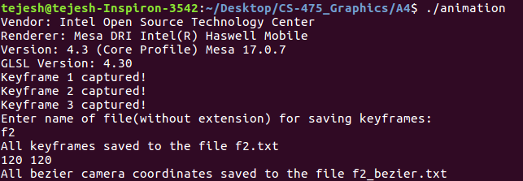
To playback the animation using already created keyframe:
Press P and then enter filename of keyframe. It will also ask if you want camera coordinates to be in Bezier curve or linearly interpolated. Specify the file containing Bezier coordinates if asked. Files final.txt and final_bezier.txt already given for the same
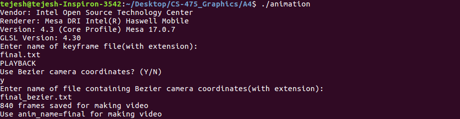
Image frames will be saved in the folder "image_frames". They will be inverted and in ppm file format. To correct orientation and convert to jpg format enter the command:
make jpg_flip anim_name=<animation name>
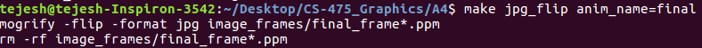
To make video out of these frames enter the command:
make myvideo anim_name=<animation name>
Video will be saved in the video folder in "avi" file format
To add audio to the video, enter the command:
make attach_sound anim_name=<animation name>
A default audio saved in sample_audio folder will be attached. You can change the audio file by editing makefile
Final video will be saved in the "final_video" folder
You need to select any object before applying rotations to it. Initially camera is placed at the position (1.5, 1.5, 1.5) and has field of view 45 degrees. Here are the controls needed for the same:
Position coordinates, normals, color, heirarchy, etc of models are well commented and stored in the files humanoid_coordinates.hpp, windmill_coordinates.hpp and cube_coordinates.hpp.
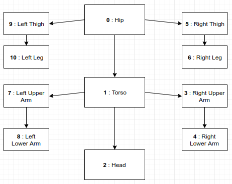
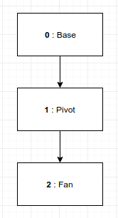
When all lights are turned ON:
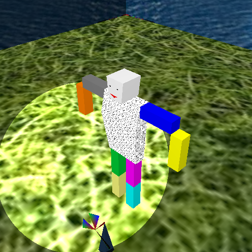
When all lights are turned ON except the first directional light:
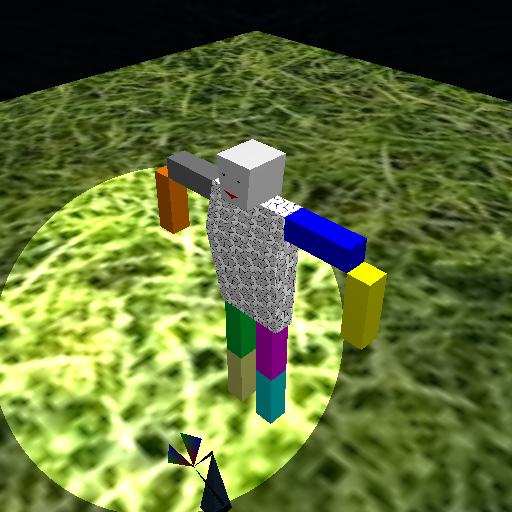
When all lights are turned ON except the second directional light:
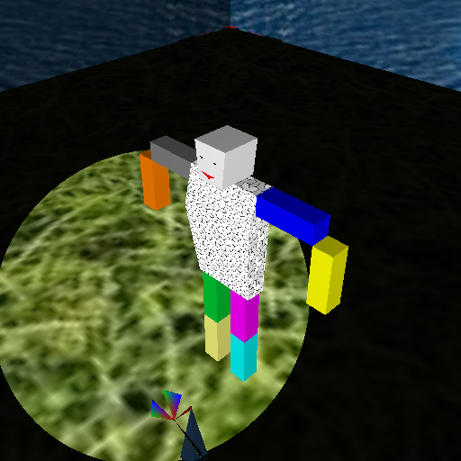
When all lights are turned ON except the spot-light:
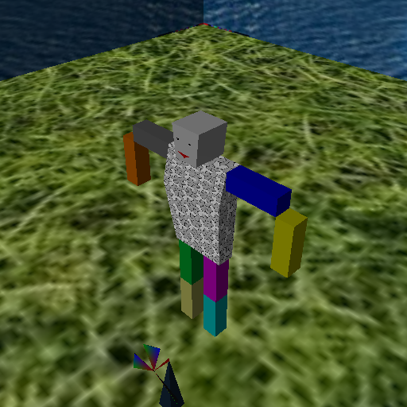
Just some random images after few transformations:
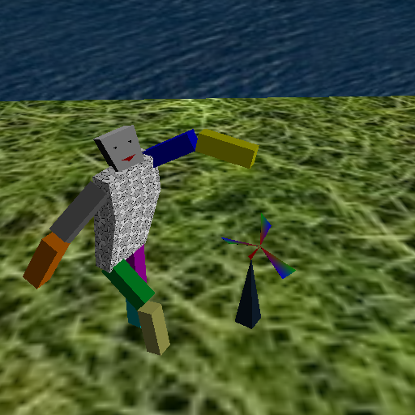 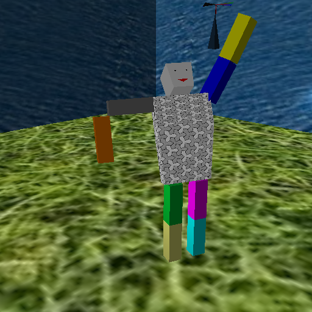